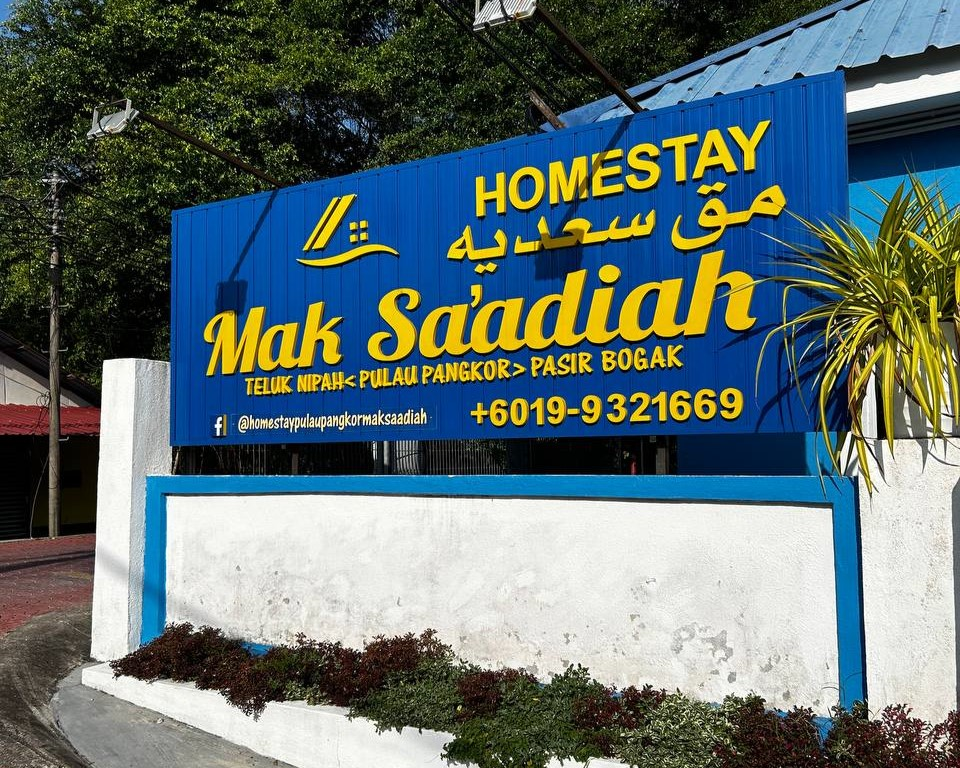
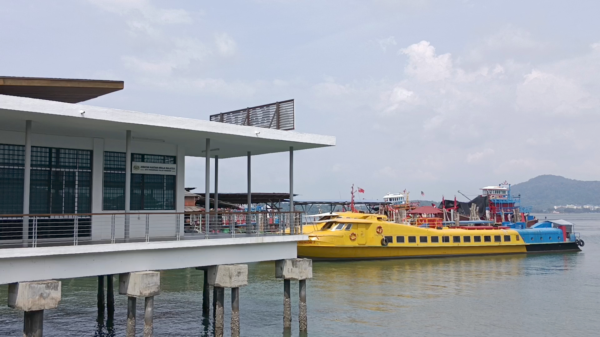

1. Lumut Jetty Terminal
The Lumut Jetty is a place where you have to buy a 2-way ticket (Lumut-Pangkor-Lumut) to get to Pulau Pangkor for 30 minutes. You must keep the ticket safe with you because if you want to go back to Lumut from Pulau Pangkor you must purchase a new ticket at Pulau Pangkor Terminal to board the ferry. But, if you lose the ticket you have to buy a new ticket which is a one-way ticket with a price of RM 10.00.
Another tip for you if you're a clumsy person. You can buy a one-way ticket from Lumut to Pulau Pangkor. When you want to go Lumut back, you buy a new one-way ticket.
Ticket Price for 2-way (Lumut-Pangkor-Lumut)
- Adult: RM 20.00
- Children: RM 11.00 (2 years old until 12 years old)
This is what it looks like inside the terminal after you certify your ticket at the entrance:


2. Pink Van at Pulau Pangkor Terminal
When you arrive at Pulau Pangkor Terminal, outside of the terminal there's a lot of Pink Vans. The pink van can be used as transportation to your hotel, resort, or homestay. Also, you can rent a car at Pulau Pangkor, but for me, it's much cheaper to use a Pink Van than renting a car because of the price per day.
The Pink Van price ranges to hotel, resort, or homestay based on the distance from the terminal to your destination. Most of the Pink Van driver services are good.

3. Mak Sa'adiah Homestay
My family stayed at Pulau Pangkor, Teluk Nipah for 3 days and 2 nights. The homestay that I stayed in is Mak Sa'adiah Homestay.
To know more about Mak Sa'adiah Homestay you can click on the image above!
The entirety of the homestay for 9 pax that we chose:
There are 3 rooms + kitchen in the house
- Room 1: 1 Queen Bed + 1 Single Bed
- Room 2: 1 Queen Bed + 1 Single Bed
- Toilet: 1
- Extra: 3 single mattresses
- Private kitchen inside the house

Front Door

Living Room

Room 1: 1 Queen Bed + 1 Single Bed + 1 Single Mattress

Room 2: 1 Queen Bed + 1 Single Bed + 2 Single Mattresses

Dining Table

Private kitchen inside the house
3. Teluk Nipah Beach
Teluk Nipah Beach is near Mak Sa'adiah Homestay, technically you have to walk a bit to go there. There's lot of food stall near the beach, you can buy food to eat at the beach.
Also, there are a mart store and Duty Free Store. The Duty-Free Store is known as shop with different types of chocolate with different brands that are cheap!

4. Pulau Pangkor Jetty Terminal

To go back to Lumut you have to board at Pulau Pangkor Jetty Terminal's Ferry. Must have ticket entrance to be inside the Ferry and the duration of arrival is within 30 minutes. You can shopping more of souvenier, food, clothes or anything near the Jetty Terminal because there's a lot of store around there.
An important reminder!
After, you check in your ticket you'll have to through the Immigration area. If you bring any illegal item from Pulau Pangkor punishment will be taken action.
This is the view of you're arriving at Lumut Jetty Terminal! :

I hope the information that I've shared gives a lesson to you!